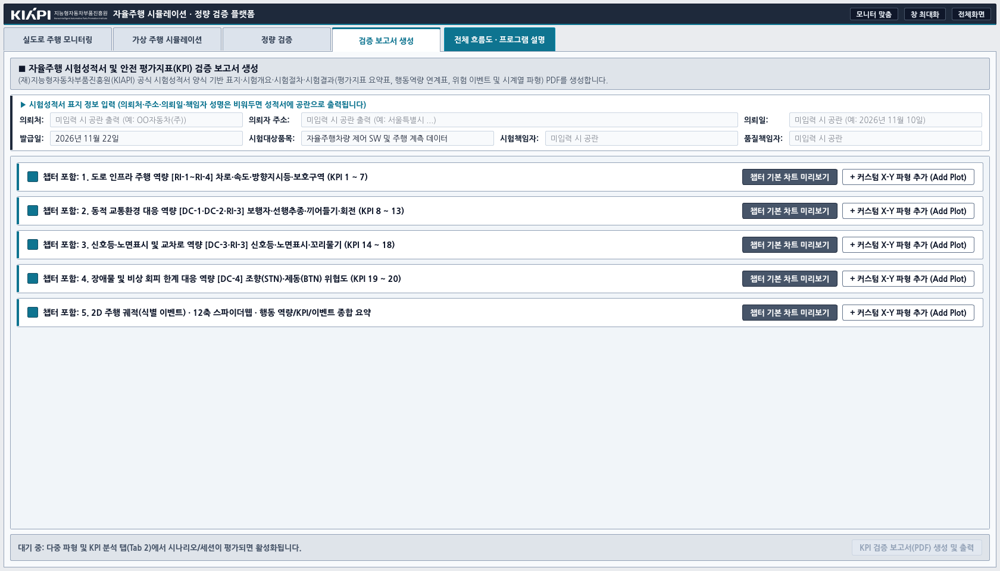
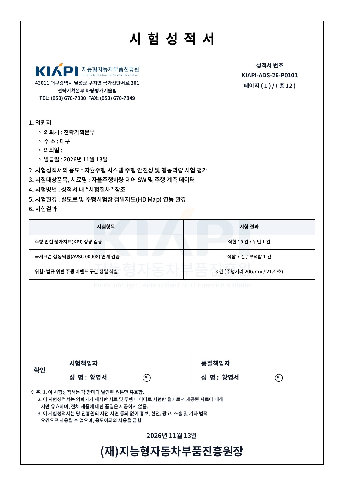
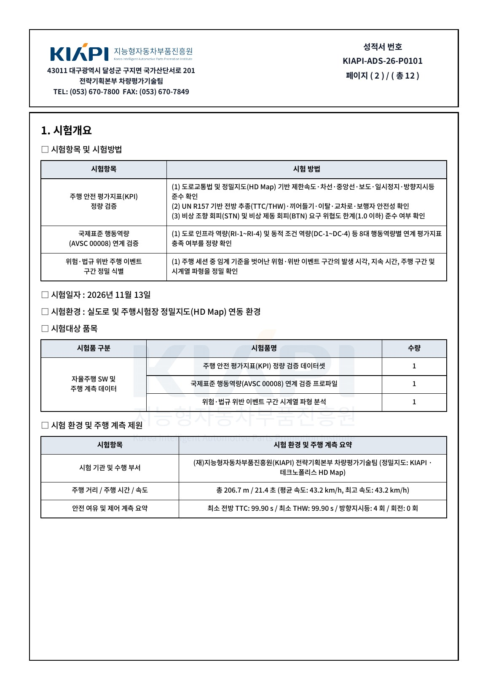
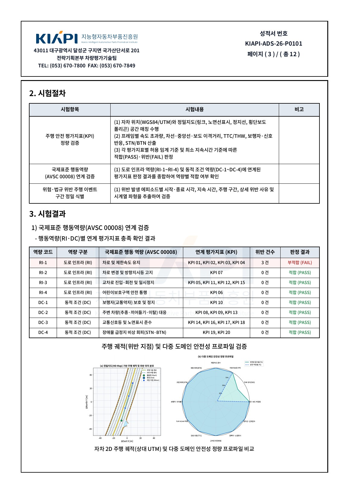
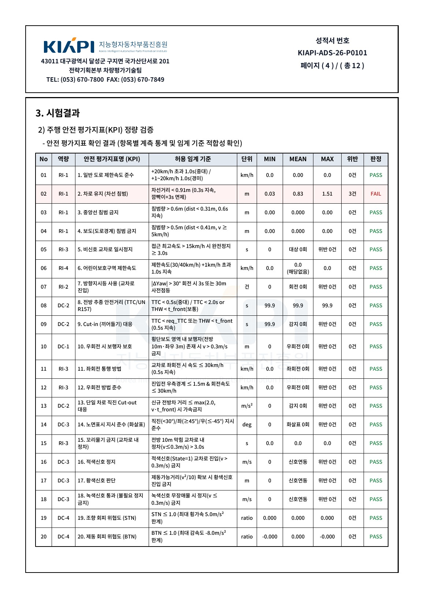
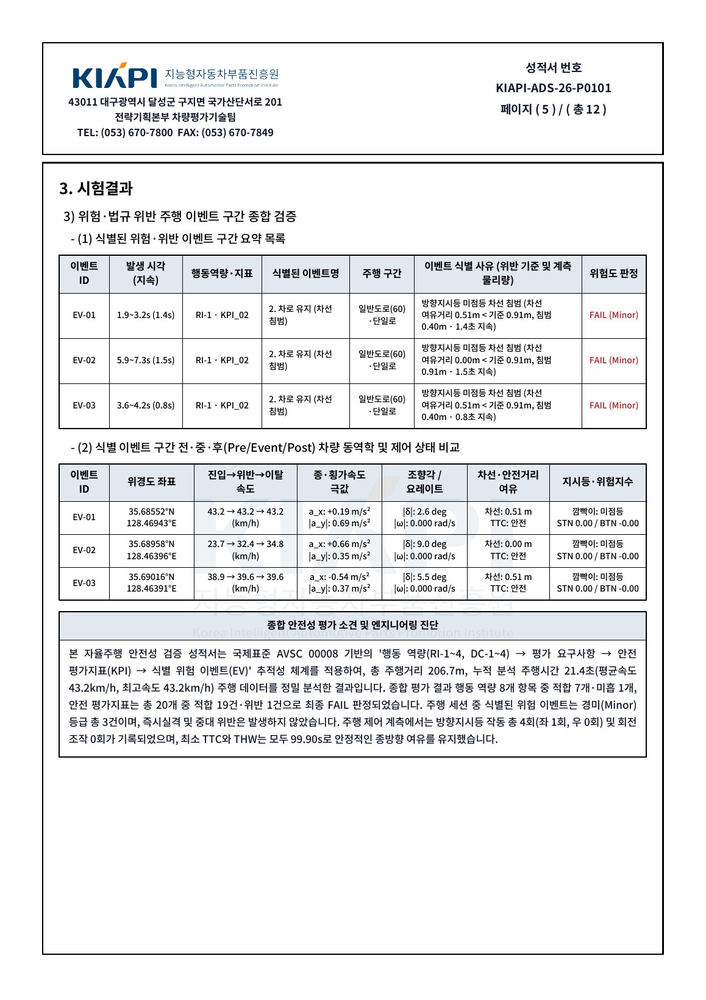
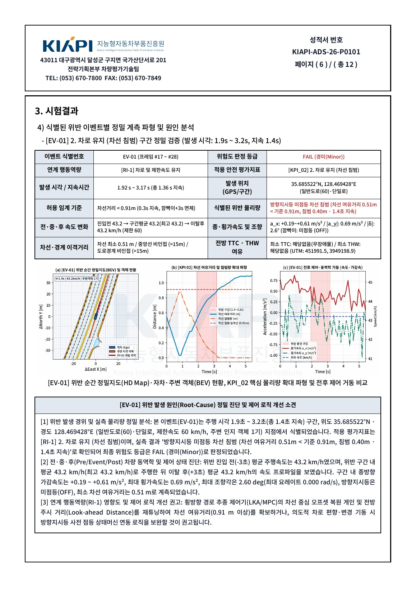

검증 보고서(PDF) 생성(Tab 4) 매뉴얼 및 참고 기술문서
표지 메타데이터 입력, 챕터별 기본 차트 확인 및 사용자 지정 X-Y 파형 추가, 시험성적서 PDF 출력 절차를 설명하고 세부 기술문서 PDF 자료를 제공합니다.

그림 1. [Tab 4: 검증 보고서 생성] 화면 — 표지 정보 입력란, 5개 챕터 구성 체크박스 및 미리보기, 커스텀 X-Y 파형 추가, PDF 출력 버튼.
1. 검증 보고서(PDF) 생성 절차
- 표지 정보 입력:
의뢰처,의뢰처 주소,의뢰일,발급일,시험대상품목,시험책임자,품질책임자를 입력합니다(비워둔 항목은 성적서 양식에 공란으로 출력됨). - 수록 챕터(1~5장) 선택 및 커스텀 차트 추가:
- 챕터 1 ~ 4: 도로 인프라 주행(KPI 1~7), 동적 교통환경 대응(KPI 8~13), 신호·노면표시·교차로(KPI 14~18), 비상 회피 여유(KPI 19~20) 포함 여부를 체크하고
[챕터 기본 차트 미리보기]로 그래프를 사전 확인합니다. - 챕터 5: 식별 이벤트 2D 주행 궤적, 12축 스파이더웹 레이더, 종합 요약표를 포함합니다.
[+ 커스텀 X-Y 파형 추가 (Add Plot)]버튼을 사용하면 기본 차트 외에 사용자가 원하는 센서·제어 신호 조합 그래프를 챕터에 추가할 수 있습니다.
- 챕터 1 ~ 4: 도로 인프라 주행(KPI 1~7), 동적 교통환경 대응(KPI 8~13), 신호·노면표시·교차로(KPI 14~18), 비상 회피 여유(KPI 19~20) 포함 여부를 체크하고
- PDF 생성 및 출력: 우측 하단
[KPI 검증 보고서(PDF) 생성 및 출력]을 클릭하여 최종 보고서 PDF를 저장합니다.
2. 출력 보고서 페이지별 구성 예시 (클릭 시 확대)

표지(p.1): 문서번호, 시험 개요, 종합 판정(적합/부적합) 및 8대 역량 요약

20-KPI 결과표(p.2): 항목별 위반 건수, 계측 물리량 및 등급

행동역량 연계표(p.3): AVSC 00008 요구사항 및 하위 KPI 적부 매핑

12축 레이더 & 파형(p.4): 준수율/안전여유도 스파이더웹 및 전 구간 동역학 파형

이벤트 구간 비교(p.5): 위반 전·중·후 동역학 요약표 및 종합 평가 소견

개별 이벤트 상세(p.6): 위반 순간 2D 정밀지도 BEV, 적색 음영 파형 및 원인 분석